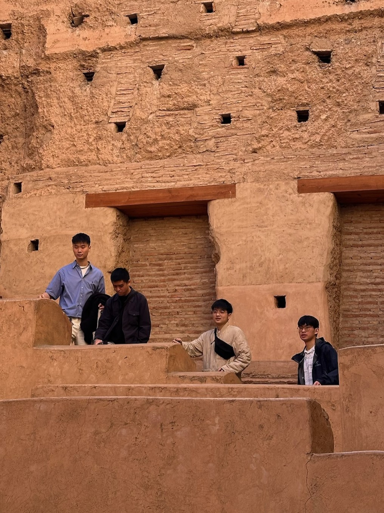

Less Windows XP, more night sky.
Your travel data is great. The face on it is dated: flags in boxes and an embedded Google map read like 2008. Here are three modern ways to show where you've been, all on your real 24 countries.
Where it's at
src/travel/TravelStats.js: a Google My Maps embed behind a consent click, a photo card, 6 stat boxes, and a wall of flag chips.
What's off
24 flags are 24 different art styles fighting each other, that's the XP feeling. The embed is someone else's UI inside yours. All stats get equal boxes, so nothing lands.
The move
One hero visual that's yours, a few huge numbers, a calm list. Kill the flags. Keep My Maps as a link for the deep dive.
Pick a log
Data comes from public/travel-stats.json: 24 countries, 12% of the world, 1,038 pins on your map, home is Malaysia and you're based in London.
A · Night Globe
A dark globe you can spin. Your countries glow, dotted arcs fly out from London and Kuala Lumpur. Hover a country in the list and the globe turns to it.
Drag to spin · hover the list
Travel Log
Why it works
A globe inside a world about a planet is perfect rhyme. It's the modern data-product look (dark globe, glowing arcs) instead of a stock map widget. Four big numbers carry the brag, the list carries the detail.
HCI + accessibility
The globe is a bonus, never the only way in: the list holds every country as a focusable row, and focusing one turns the globe. Drag works with mouse and touch. Auto-spin stops on interaction and under reduced motion.
How it'd be built
Two ways: d3-geo orthographic in SVG like this demo (about 8KB of data), or a real Three.js sphere since you already run Three. Countries come from world-atlas, matched by name to travel-stats.json, so a new country just lights up.
Watch out
Tiny places (Malta, Singapore, Hong Kong) vanish at this resolution, so they're drawn as dots. Use a lazy import so the map data only loads when the panel opens.
B · Travel Wrapped
Story cards that play like a year in review: one huge number at a time, with bars along the top. Tap right for next, left for back, hold to pause.
Click the scene · ← → or tap · hold to pause
Travel Log
Why it works
Everyone knows how to use stories. One number per card means each one lands, and "furthest from home" is a fun fact nobody else shows. Feels fresh every visit.
HCI + accessibility
Tap zones are big buttons, arrows and space work, progress bars show where you are. It pauses on hold, on hover and when hidden. Reduced motion turns off auto-advance.
How it'd be built
Cards generated from the same stats TravelStats.js already derives (continents, furthest via haversine, wonders). A tiny player with a timer. Around 120 lines.
Watch out
Auto-advancing content can annoy people who read slowly, so 6 seconds minimum and pause-on-hover. No way to see the full country list unless you add a final "all countries" card.
C · Logbook
Photo-led and editorial. Your own photos as postcards, then a calm list where every country is its own silhouette instead of a flag, all in one colour.
Needs more of your photos to shine
Travel Log


Why it works
Personal beats impressive here. Your photos say more about you than a count. Silhouettes in one colour look like a designed set, which is exactly what flags can't do.
HCI + accessibility
Plain list, plain filters, every row has text, photos have real alt text. The quietest and most readable of the three.
How it'd be built
Silhouettes drawn from the same world-atlas data (one path per country, fitted to a small box). Photos go in public/islandphoto/. Around 90 lines.
Watch out
Lives or dies on photos: two isn't enough. Least "wow" on first open. Also the Unsplash shots on Mountain should move here only if they're replaced by yours.
Night Globe, with Wrapped's big numbers on top.
The globe is the strongest single image on this page and it belongs in a world about a planet. Pair it with four huge numbers and a calm list and the panel goes from "settings screen" to "mission control". It also fixes the biggest design smell: your own visual instead of an embedded Google map.
Kill the flag chips. They're the XP feeling. Use ISO codes or silhouettes in the island colour. Keep the photo card (it's lovely) and add more of your own photos over time, and keep the My Maps link for people who want every pin. If you want a little extra delight later, a "play your year" button can launch the Wrapped cards over the globe.